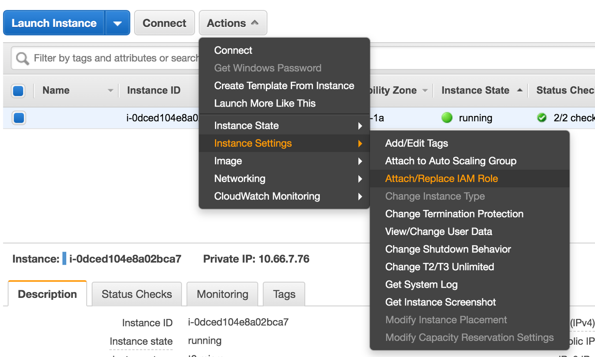
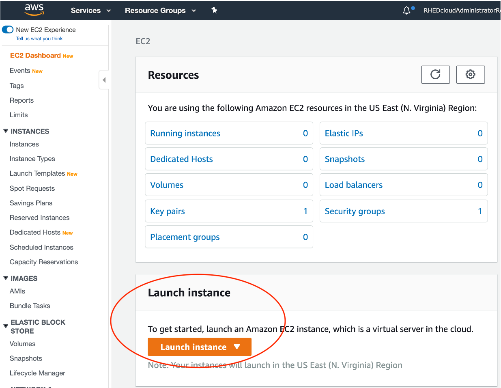
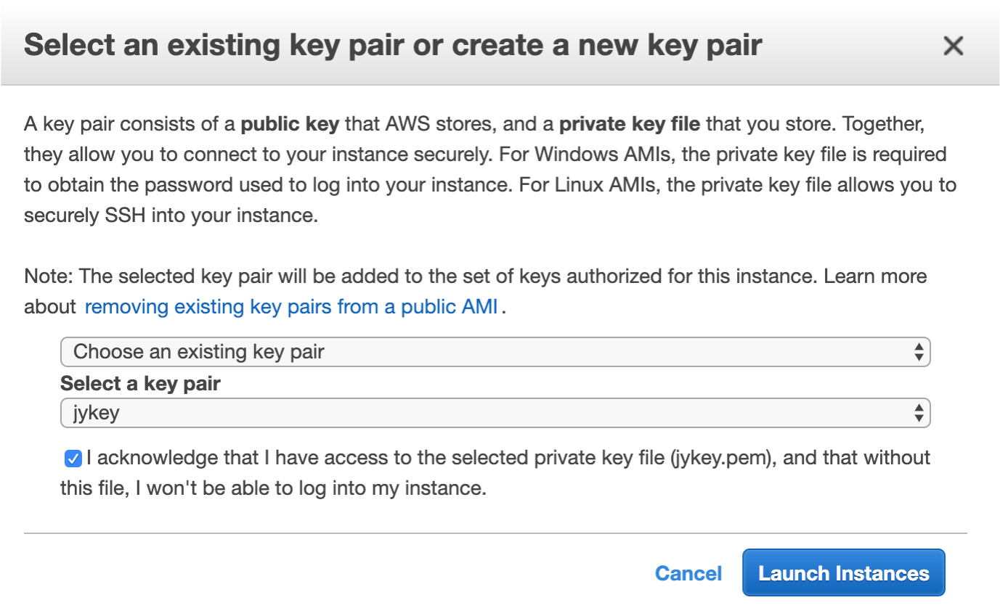
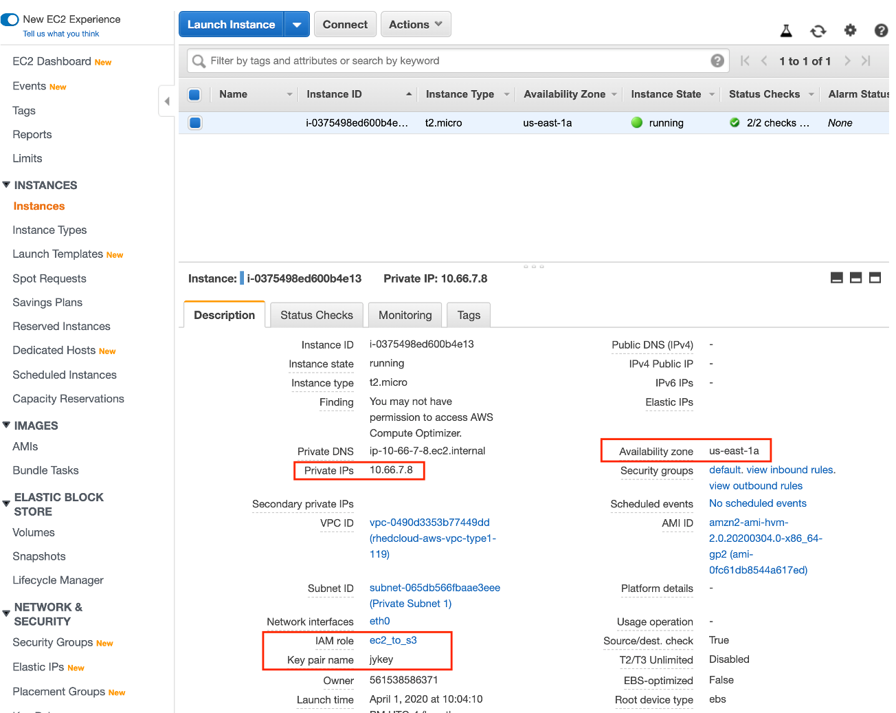
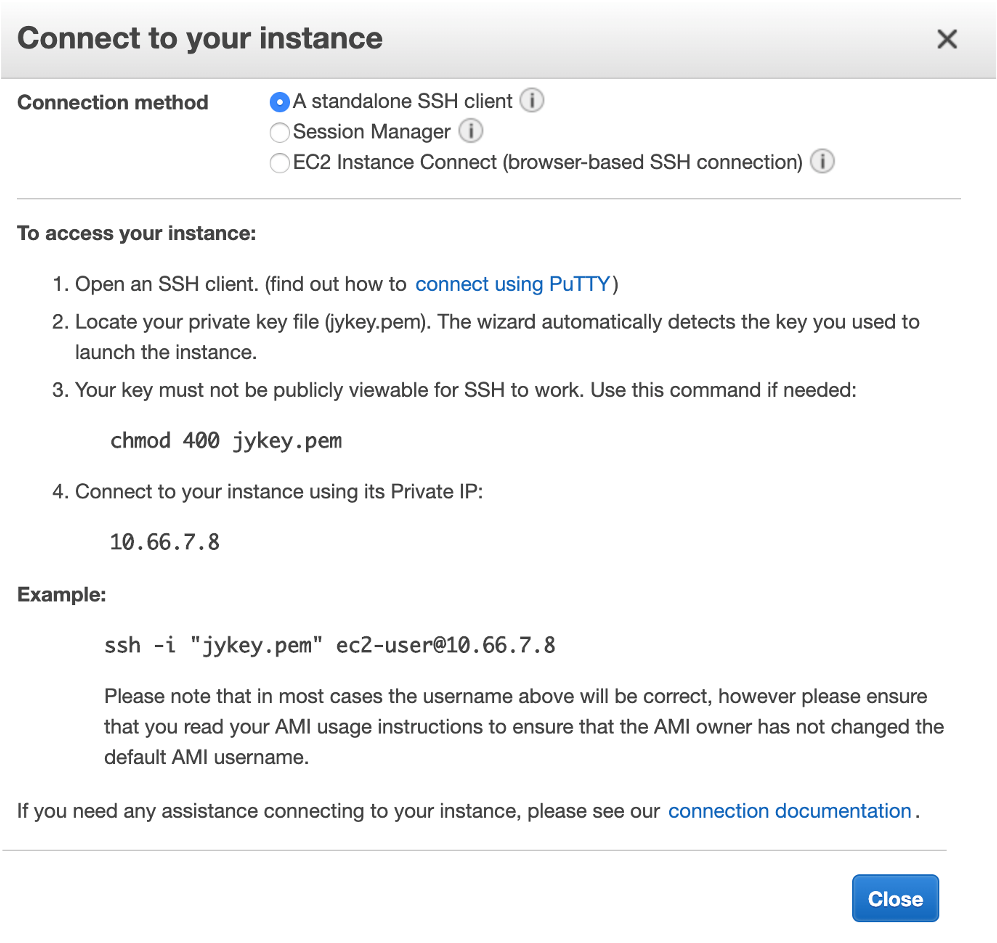
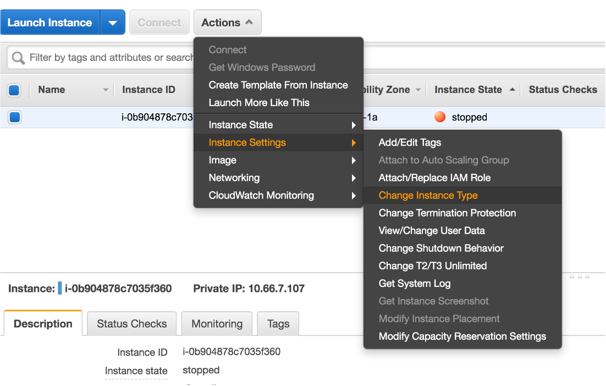
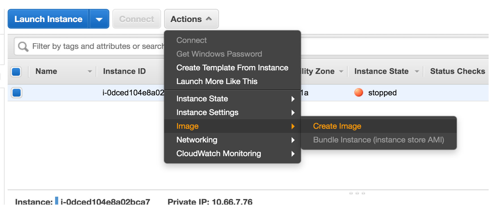
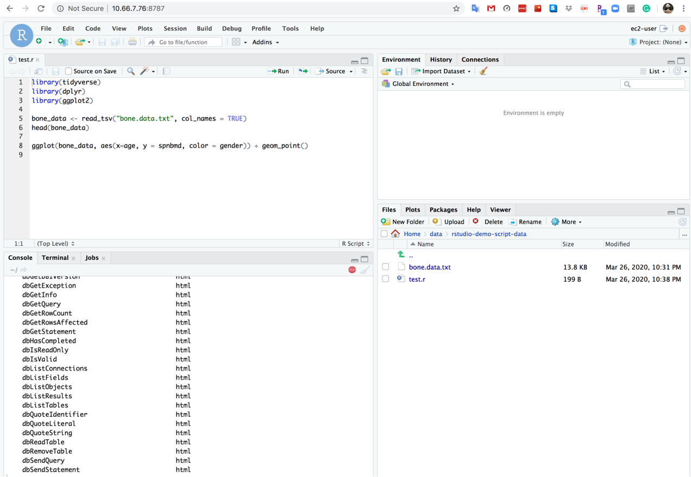
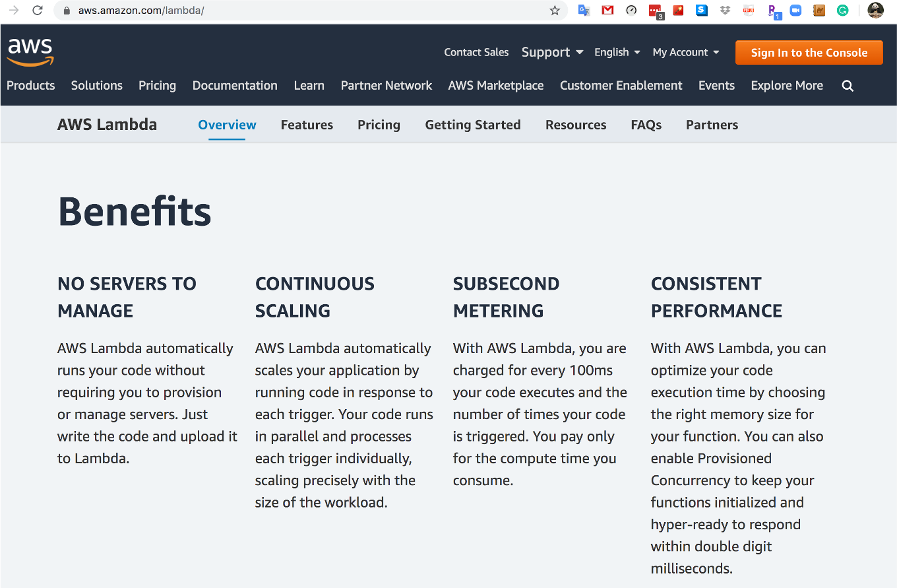

aws-account-115 is our lab accountEC2toS3Full).IAM ServiceDashboard/Access management/RolesCreate Role:
AmazonS3FullAccessec2-to-s3

RHEDCloud VPCPrivate Subnet 1 | us-east-1a (note that you do not have permission to use the default one that is IT only)EmoryIPPrivate Key pair (*.pem) is needed to login to the EC2 instance.
cd ~/Downloads
chmod 400 *.pem
Launch Instance
Review Instance Launch 
Actions/Connectssh command to connect*.pem under the current directory
Actions/Instance Settings/Change Instance Type
Instance/Actions/Image/Create Image
S3 Storage is a preferred place to store frequently used data.
EC2 access S3 IAM role to your EC2 instanceaws s3, e.g., aws s3 ls.yum for this Linux/RedHat system: sudo yum install [package name]
sudo yum erase [package name]sudo yum groupinstall -y ‘Development Tools’sudo yum install -y libcurl-devel openssl-devel libxml2-develsudo yum install -y epel-releasesudo yum install -y Rwget https://download2.rstudio.org/server/centos7/x86_64/rstudio-server-rhel-2022.02.3-492-x86_64.rpm
sudo yum install rstudio-server-rhel-2022.02.3-492-x86_64.rpmsudo passwd ec2-userhttps://[private IP address]:8787ec2-user and the password you set upaws s3 cp s3://yanglab-at-emoryhg/rstudio-demo-script-data.zip ./
unzip rstudio-demo-script-data.zip
Outputs/Results from EC2 instance to S3 storage or your local computer or HGCC.
aws s3 cp [directory/file] s3://yanglab-at-emoryhg/